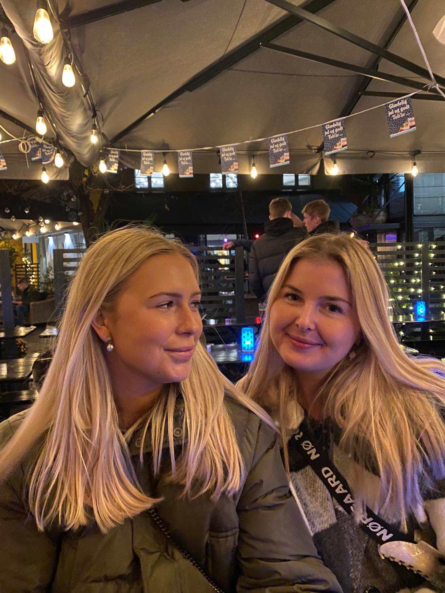

Om mig
Mit navn er Tanja og jeg er 22 år gammel. Til dagligt læser jeg multimediedesign på Kea, og det er bare mega fedt! Når jeg ikke har travlt på studiet, så nyder jeg at tilbringe min tid sammen med mine venner og kæreste. Jeg elsker at tage ud og opleve ting, og jeg er altid frisk på en bytur.
Jeg har taget en stx, hvor jeg gik i den internaionale klasse, og efter gymnasiet tog jeg 3 sabbatår, hvor jeg primært bare har arbejdet. Min drøm er at arbejde med design og SoMe, når jeg en dag er færdiguddannet.
